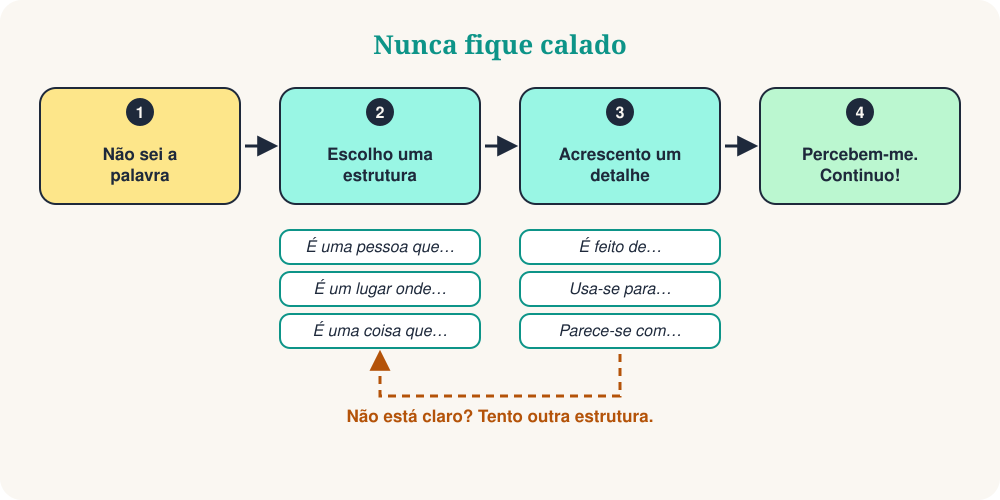

Está no mercado. Quer pedir um carregador, mas a palavra desapareceu. O seu cérebro diz: traduz! Há uma forma melhor. Não procure a palavra que falta. Descreva-a.
É uma competência real, e os falantes nativos também a usam. Com 10 estruturas de frase pode descrever uma pessoa, um lugar, um objeto ou um momento. Muitas vezes, a outra pessoa dá-lhe a palavra. Depois, continua a falar.

As 10 estruturas de frase
Aprenda a estrutura, não a palavra. Leia o exemplo em voz alta e experimente a mesma estrutura com uma palavra nova.
| # | Estrutura | Exemplo | Serve para descrever |
|---|---|---|---|
| 1 | É uma pessoa que… | É uma pessoa que ensina crianças. | uma pessoa (um professor) |
| 2 | É um lugar onde… | É um lugar onde se compra comida. | um lugar (um mercado) |
| 3 | É uma coisa que… | É uma coisa que dá as horas. | um objeto (um relógio) |
| 4 | É algo que se usa para… | É algo que se usa para escrever. | uma ferramenta (uma caneta) |
| 5 | É um momento em que… | É um momento em que as pessoas dormem. | um momento (a noite) |
| 6 | É um dia em que… | É um dia em que as pessoas celebram. | um dia especial (um feriado) |
| 7 | Por exemplo… | Gosto de desporto. Por exemplo, futebol e ténis. | uma ideia: dar exemplos |
| 8 | Significa… | «Enorme» significa muito grande. | uma palavra: explicar com palavras simples |
| 9 | Parece-se com… | Parece-se com um computador pequeno. | o aspeto: comparar |
| 10 | Como se diz… em português? | Como se diz isto em português? | qualquer palavra: pedir ajuda |
Na vida real
O empregado sorri e traz-lhe uma caneta.
Context: Num café, quer assinar a conta.
A pessoa responde: «O mercado? Fica a duas ruas daqui.»
Context: Numa cidade nova, procura o mercado.
O seu amigo ri-se: «Uma banana!»
Context: Numa festa, esqueceu-se da palavra.
10 frases de sobrevivência
São pequenos acrescentos. Coloque-os depois de uma estrutura para dar mais detalhes.
| # | Frase | Exemplo |
|---|---|---|
| 1 | É um tipo de… | É um tipo de animal. |
| 2 | É feito de… | É feito de madeira ou metal. |
| 3 | Usa-se para… | Usa-se para viajar. |
| 4 | É o contrário de… | É o contrário de «caro». |
| 5 | Soa a… | Soa a música. |
| 6 | Tem… | Tem quatro rodas. |
| 7 | É semelhante a… | É semelhante a um carro. |
| 8 | Vem de… | Vem de Itália. |
| 9 | Não sei a palavra, mas… | Não sei a palavra, mas é para cozinhar. |
| 10 | Pode repetir, por favor? | Desculpe, pode dizer mais devagar? |
O método em 3 passos
Vamos descrever um guarda-chuva sem dizer a palavra:
- Categoria: É uma coisa que o protege.
- Função: Usa-se quando chove.
- Detalhe: Parece-se com um telhado pequeno.
Três frases curtas. A outra pessoa diz «Um guarda-chuva!» e a conversa continua.
Evite estas 4 armadilhas
Quiz rápido
❓ Esqueceu-se da palavra «padaria». Que frase funciona melhor?
«É um lugar onde…» é a estrutura perfeita para lugares. A outra pessoa ouve «pão» e «lugar»: uma padaria!
❓ Que frase descreve uma «tesoura»?
A tesoura é uma ferramenta, por isso use «É algo que se usa para…».
❓ Um amigo diz: «É o contrário de caro.» Qual é a palavra?
O contrário de caro é barato. Uma ótima forma de explicar adjetivos!
O seu treino de 5 minutos
- Olhe à sua volta e escolha 5 objetos.
- Descreva cada um com uma estrutura, sem dizer o nome.
- Acrescente uma frase de sobrevivência aos dois mais difíceis.
- Grave-se com o telemóvel e ouça a sua voz.
- Amanhã repita com 5 objetos novos.
Resumo
A fluência não é saber todas as palavras. É nunca ficar calado. Aprenda as estruturas, acrescente um detalhe e continue a falar.
“Descreva-o. Não o traduza.”